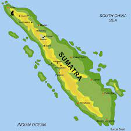

Jawa adalah sebuah pulau di Indonesia yang terletak di kepulauan Sunda Besar dan merupakan pulau terluas ke-13 di dunia.
Sumatra adalah pulau keenam terbesar di dunia yang terletak di Indonesia, dengan luas 473.481 km².
Kalimantan, atau juga disebut Borneo oleh dunia internasional. Kalimantan adalah pulau terbesar ketiga di dunia yang terletak di sebelah utara Pulau Jawa dan di sebelah barat Pulau Sulawesi.
Sulawesi, dahulu dikenal sebagai Celebes, adalah sebuah pulau di Indonesia. Sulawesi merupakan salah satu dari empat Kepulauan Sunda Besar dan merupakan pulau terbesar kesebelas di dunia.
Papua adalah provinsi yang terletak di pesisir utara Tanah Papua, Indonesia, yang berdiri sejak 1 Mei 1963. Provinsi Papua sebelumnya bernama Irian Jaya yang mencakup seluruh Tanah Papua bekas Nugini Belanda.